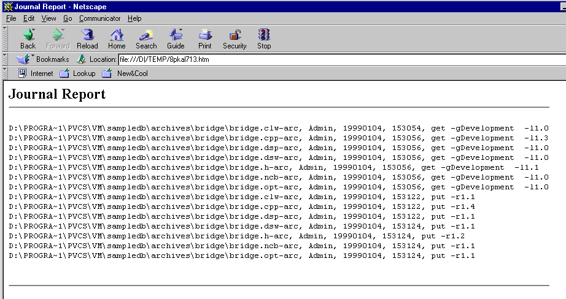

Sample Journal Report
The journal report contains information about changes made to archives, such as assigning version labels, checking workfiles in and out, and assigning a promotion group.
The following is a sample journal report generated from the Sample Database and displayed in a local html browser.

Each journal report line has the following format:
archive, user_id, date, time, action, cl_option
where:
archive is the path and file name of the archive.
user_id is the user ID of the User who made the changes to the archive.
date is the date of the modification in packed decimal numeric form. For example, March 31, 1999 appears as 19990331.
time is the time of the modification in packed decimal numeric form (using a 24-hour clock). For example, 4:55:20 P.M. would be 165520.
cl_option is the command-line option of the action that was taken. For example, put -r1.0, which means revision 1.0 was checked in.
See Also